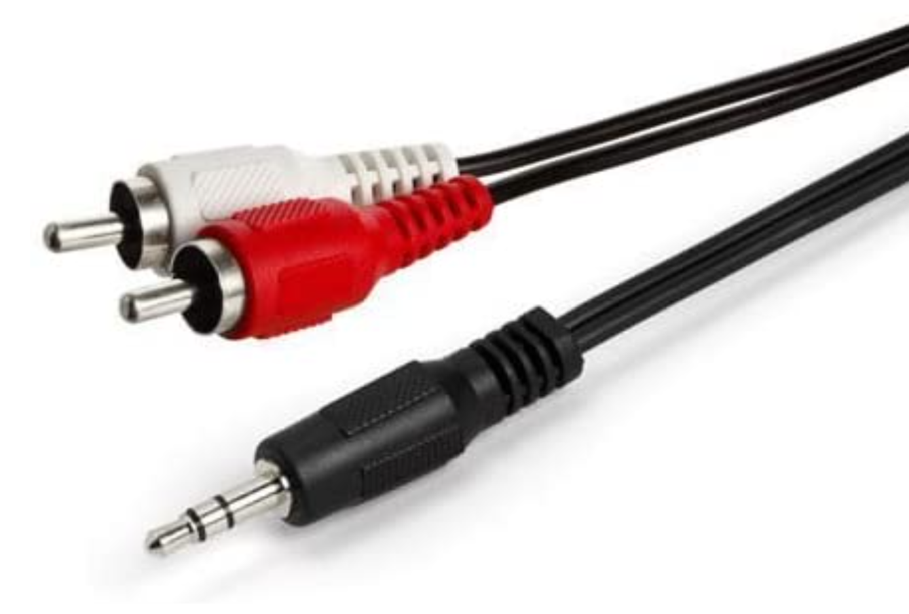
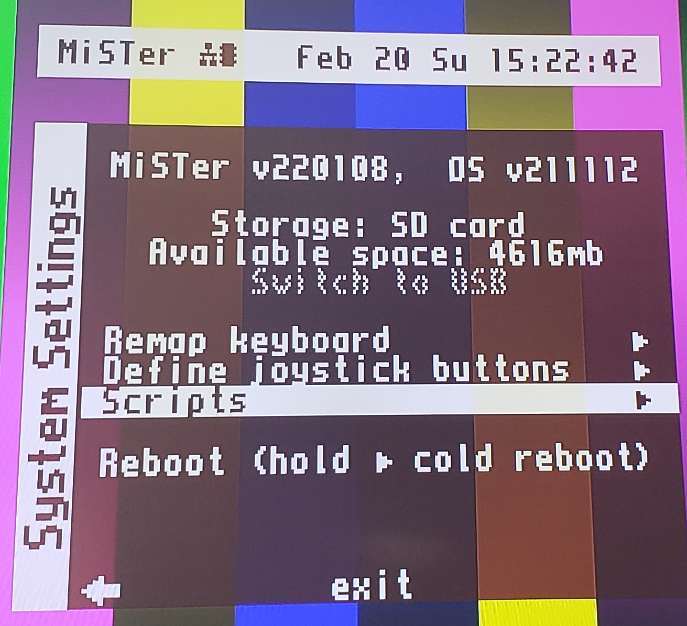
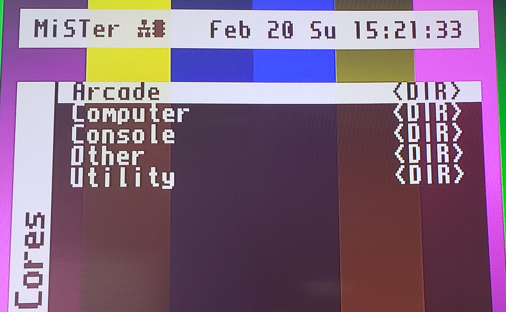
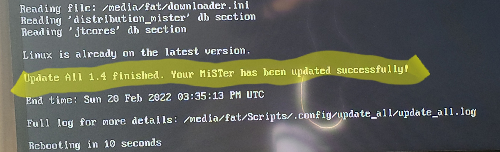
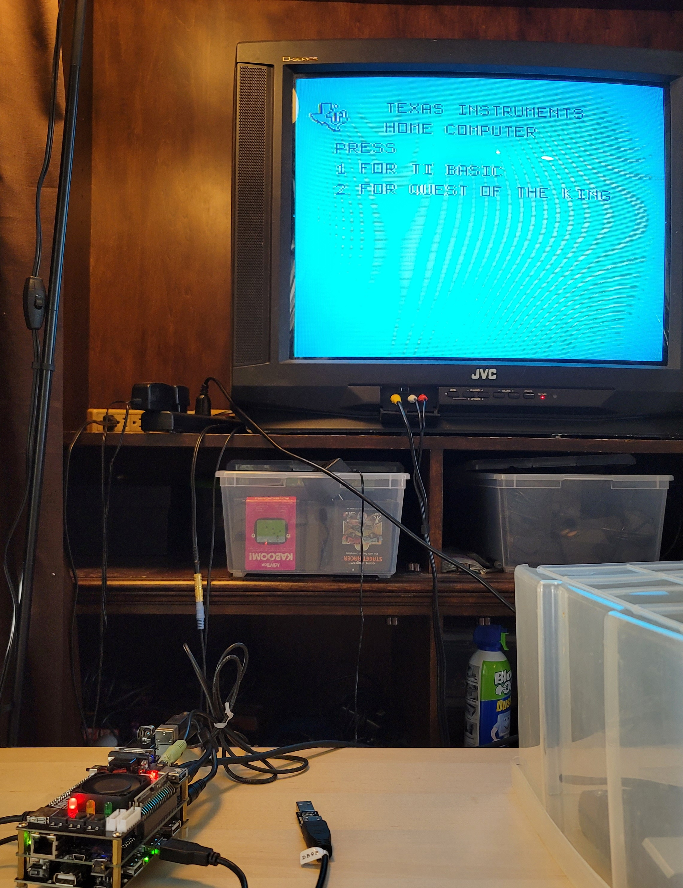
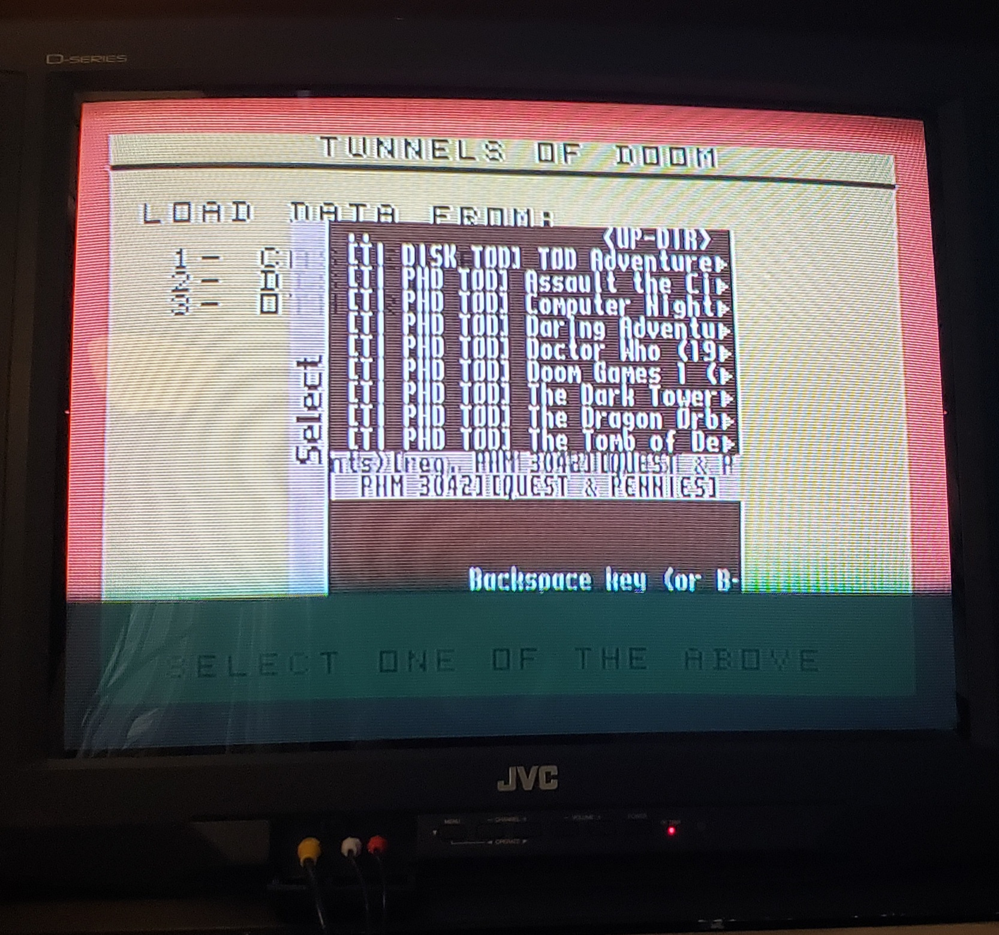
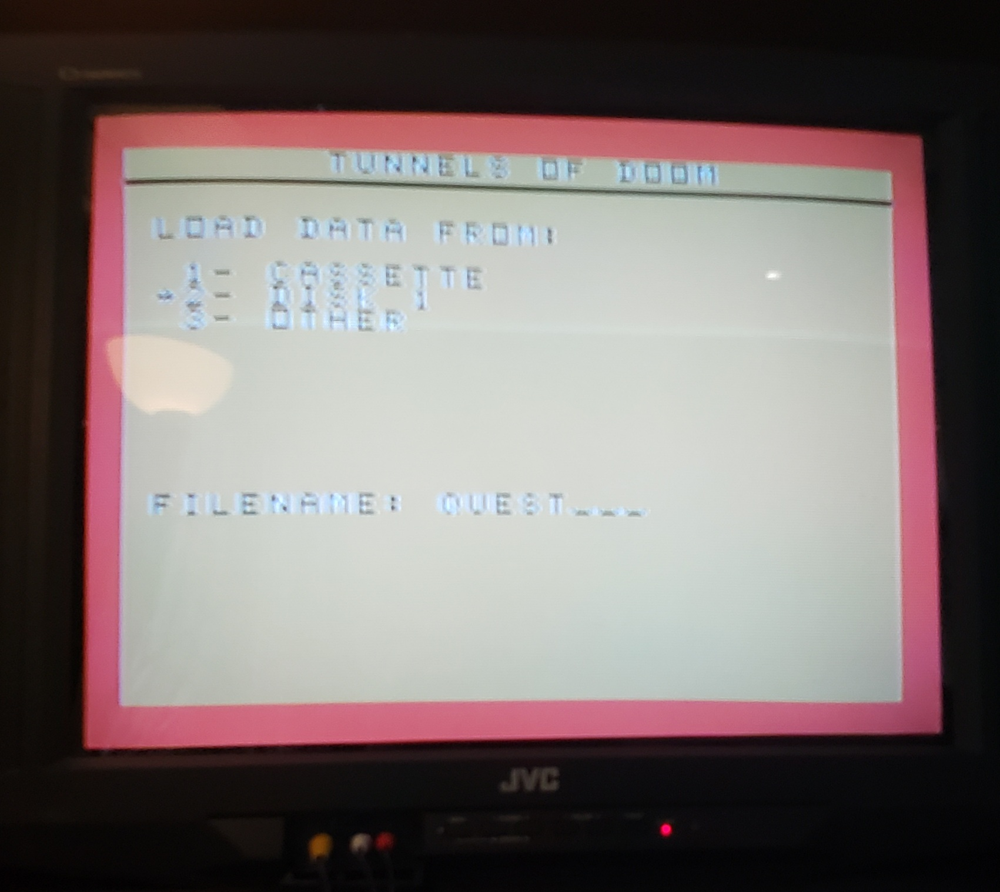
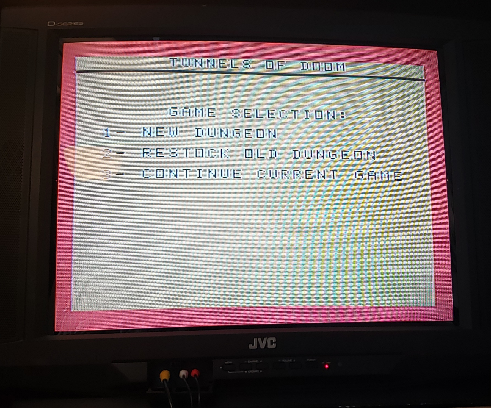

New Content, 2022-02-13 New Content, 2022-02-13
New Content, 2022-02-13 New Content, 2022-02-13Much like my friend George when I was 11, my friend Werner and I are interested in classic computer games. Of course, when I was 11, they were not "classic computer games". They were just "computer games". Werner had long been using the MiSTer FPGA hardware emulation system. I was interested in following his lead in this, and I decided to use "Play Tunnels of Doom" as my first User Story to gain competence in the system. This section is my summary of that work. In this section, you will learn how to go from absolute zero to equipping your dungeon crawling party using MiSTer. Let's break the tutorial into several sections.
One time setup: Going from zero to being ready to see the 16 color boot screen of the TI-99/4a.
Going from the 16 color boot screen to equipping your party.
Let's dive in!
Set expectations
This whole emulation scene is a community, open source, effort. Don’t expect things to work 100% all the time.
You must be prepared for a lot of hassle.
It is a living and dynamic hobby. Things that work at one point can stop working and you’ll have to tinker and debug.
In my experience, there is a lot of trial and error. You must be methodical. In my case, I have a notebook where I write notes and paste in printed FAQ segments with glue stick.
Be ready for total information overload. There is so much information out there on Reddit, YouTube, the forums. Much of what you find will not even apply to your scenario, for reasons such as:
“We used to do it that way, but we no one does it that way now because so-and-so uploaded a new core and this new way is better.”
The information applies to a specific kind of hardware that you don’t have.
The information is flat out wrong, but because there is no quality control, such mistakes are not corrected.
If you are looking for a single source, top level, definitive, "start here" guide, sadly there are several. Here are the two sources that most closely match my expectations for such a resource.
I intend for this guide to be self-contained. Any external instructions one might need are incorporated by value rather than by reference. In other words (with two exceptions), you don't have to go down a hypertext rabbit hole.
Join a community
Have a MiSTer Sherpa who has done it all before. Hopefully one who knows where to get the ROMs and is willing to share them with you. For me, this is Werner.
Join the MiSTer FPGA Forum. You will need to ask questions if you get stuck.
There is also a Reddit community, but I have not joined it.
Understand these super-basic terms in the MiSTer context. To do anything with MiSTer you need at least one Core and one or more ROMs, and these files are organized in a hierarchical file system.
Core
A piece of software that turns the MiSTer into a specific old-school computer. For example, to run TI games such as Tunnels of Doom you need the “TI Core”.
The MiSTer community has many cores, and each one gets updated occasionally. Therefore a Core has a version number in YY.MM.DD format. For example, this document was written using ti99 core 21.08.29. There is probably a newer one out at time of reading.
In my setup, I keep the Cores on the micro-SD card.
ROM
A piece of software that works with and is entirely specific to a Core. For example, to run TI games such as ToD you need several ROMs, more details later.
In my setup, I keep the ROMs on the external USB hard drive.
File system
The MiSTer has important conventions for the organization of the files and directories containing the Cores and the ROMs.
You don’t usually need to know about the Core file system, but the ROMs must reside in the external HD, in a specifically named subdirectory of the games directory, at the root of the external HD. For example, for ToD you will need files in /games/TI-99_4A.
Acquire the hardware
Required (in my opinion)
Internet connection.
Windows PC
For setting up the SD card, including editing the MiSTer.ini file
For downloading the software and storing it on the USB hard drive
Ethernet cable
This is necessary to run the update_all.sh script.
HDMI cable
HD TV with HDMI inputs
MiSTer DE-10 from MisterAddons.
Comes with 8GB micro sd card built in. I use the micro-SD card to hold all the Cores. I keep the ROMs elsewhere.
Some way to read/write the SD card
USB keyboard
250GB USB hard drive
I use this for ROMs.
Optional (but I have it, so I consider it required for me)
|  | |
| 3.5mm Male to Stereo RCA Male Cable |
Composite video:
Antonio Villena composite video adapter
JVC 27" NTSC TV AV-27D201
S-video cable
1/8” stereo headphone jack to stereo RCA
Audio
3.5mm Male to Stereo RCA Male Cable
Input
Initialize the micro-SD card that came with the MiSTer DE-10.
Remove the micro-SD card from the MiSTer.
Orient the MiSTer so you are looking at the Ethernet port.
The micro-SD card slot is on the middle board, on the underside of the board, on the left hand side. Press in on the micro-SD card to activate the spring that will push the micro-SD card out. Take note which side is up. Usually, it is the side with the metal connectors.
Follow the steps for the Mr. Fusion installation method, as documented in the Setup Guide.
Re-insert the initialized micro-SD card in the MiSTer.
Make connections
Connect the MiSTer to the HD TV with the HDMI cable.
Connect the USB keyboard to the MiSTer.
Connect the Ethernet cable to the MiSTer and connect the other end to your home Internet.
Run the update_all script
Power on the MiSTer
You should see a menu called Cores with items such as:
|  | |
| The System settings menu |
|  | |
| The Cores menu |
Arcade
Computer
Console
You can press the F12 key to show or dismiss this menu at any time.
With the menu showing, you can use the Esc key to toggle between the Cores menu and the System Settings menu.
Show the System Settings menu.
Use the arrow keys to highlight Scripts and press Enter.
Because you have connected the Ethernet cable, your MiSTer is now connected to the Internet.
Accept the defaults and allow the script to run. It will take a long time, even with a fast Internet connection. The script should be able to run unattended.
When the script completes running you will be taken back to the MiSTer menu. This menu times out so if you come back to the TV and find only static, press F12 to bring back the menu.
If you want to verify the script ran successfully, put the sd card back in your PC and inspect the Scripts/.config/downloader/downloader1.log file. It should contain the lines
Errors:
none
If it does not, the run may not have been successful. Run it again and observe the behavior more closely.
After update_all has run successfully, you should have the all the cores, including the TI/99-4A.
|  | |
| Update all success |
Download the system ROM and Tunnels of Doom game ROMS to the external hard drive.
Power off the MiSTer.
Connect the external hard drive to a PC.
Download this zip file to the root directory of the external hard drive.
Extract the entire zip file to the root directory of the external hard drive. This will give you a /games directory populated with the system ROM and all the Tunnels of Doom game ROMS from world famous Italian TI/99 User Club. For the complete rom, see the TI-99_Mister_Collection MegaPack.
Disconnect the external hard drive from the PC and connect it to the MiSTer.
Optional: Connect the audio and video to an NTSC TV.
With the MiSTer powered off, connect the Antonio Villena composite adapter to the VGA port on the back of the MiSTer.
Connect the S-video cable to the back of the Antonio Villena adapter, and connect the other end to the S-video input on your NTSC TV.
Connect the 3.5mm male end of the 3.5mm Male to Stereo RCA Male Cable to the back of the MiSTer next to the Antonio Villena adapter. Connect the other end to the corresponding audio port on your NTSC TV.
You have completed the one time set up and are ready to play Tunnels of Doom on your MiSTer.
Ensure the connections are made as described in the preceding section.
Power on the MiSTer.
At the Cores menu select Computer. Press Enter.
Select Ti994a and press Enter. You should see the familiar 16 color boot screen.
Press F12 to bring up the menu for the TI-99/4A core.
Select Load full or C.bin *.bin and press Enter.
Navigate to SSS_Games/Tunnels of Doom (1982) (Texas Instruments)[PHM 3042]_FULL-ROM+DISK+SPEECH and press Enter. This simulates inserting the Tunnels of Doom cartridge into the TI-99/4a.
Press ANY KEY TO BEGIN.
|  | |
| MiSTer ready to play Tunnels of Doom |
Press 2 for Tunnels of Doom.
Hear that sweet sweet sound of Hank Mischkoff’s theme.
Press F12 to open the core menu.
Select Drive 1 *.DSK and press Enter.
Navigate to DISKS/DISKS_TOD/[TI PHD TOD] Tunnels of Doom (1982) (Texas Instruments)[req. PHM 3042][QUEST & PENNIES] and press Enter.
|  | |
| Disk selection |
Press 2 DISK 1
In the FILENAME field, type QUEST and press Enter.
|  | |
| Quest for the king |
Select 1 - NEW DUNGEON.
|  | |
| New dungeon |
Fill in the values as desired. Note that PROC'D is Alt-6, REDO is Alt-8, Back is Alt-9.
When you are ready to save your game, press K.
Select 5 to save data to DISK 1.
Type a filename. I usually use today's date in YYYYMMDD format. Press Enter.
To continue after saving, select 3.
Do the first 15 steps of the preceding section. Note: if you had already inserted the cartridge and disk, you don't need to do those steps again.
Select 3 CONTINUE CURRENT GAME.
Press K to bring up the LOAD DATA FROM/SAVE DATA TO screen.
Press 2 - DISK 1.
Type the filename you used when you saved your game before.
Select 3 - CONTINUE CURRENT GAME.
I use a software emulator to play ToD on my Windows. There are quite a few emulators out there, and most of them are listed at http://www.99er.net/emul.shtml. I've had the best luck with MAME.
Here are some tips for running ToD under MAME.
Install MAME using the steps at Mizpaf's page. There are instructions for GNU/Linux but I have not tried them.
If you want to start MAME from the prompt, the command line that works for me is:
mame64 ti99_4a -cart tundoomg.bin -r 800x600 -nohws -gamma 0.85 -sr 22050 -ioport peb -ioport:peb:slot2 32kmem -ioport:peb:slot8 tifdc -flop1 tunnels.dskWhen you get the LOAD DATA FROM menu, choose
DISK1 and type in PENNIES,
QUEST or the name of your saved game.
Here are the keys for ToD. Note that sometimes you must use Alt instead of Shift; notably in the case of ascending and descending stairs.


{kind=link}